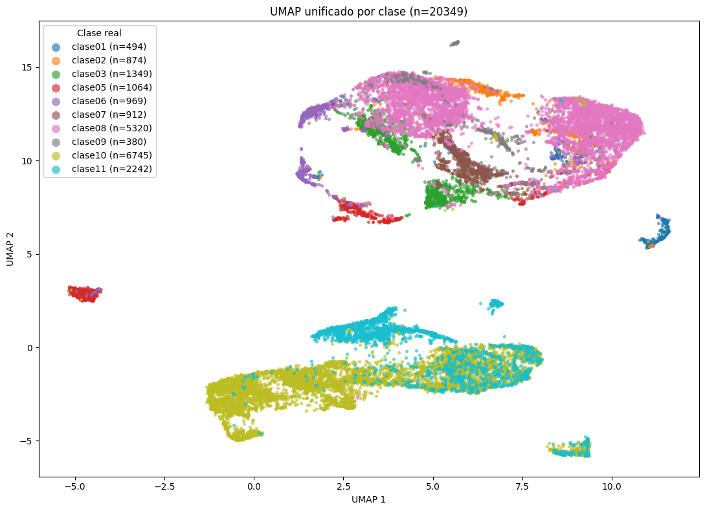
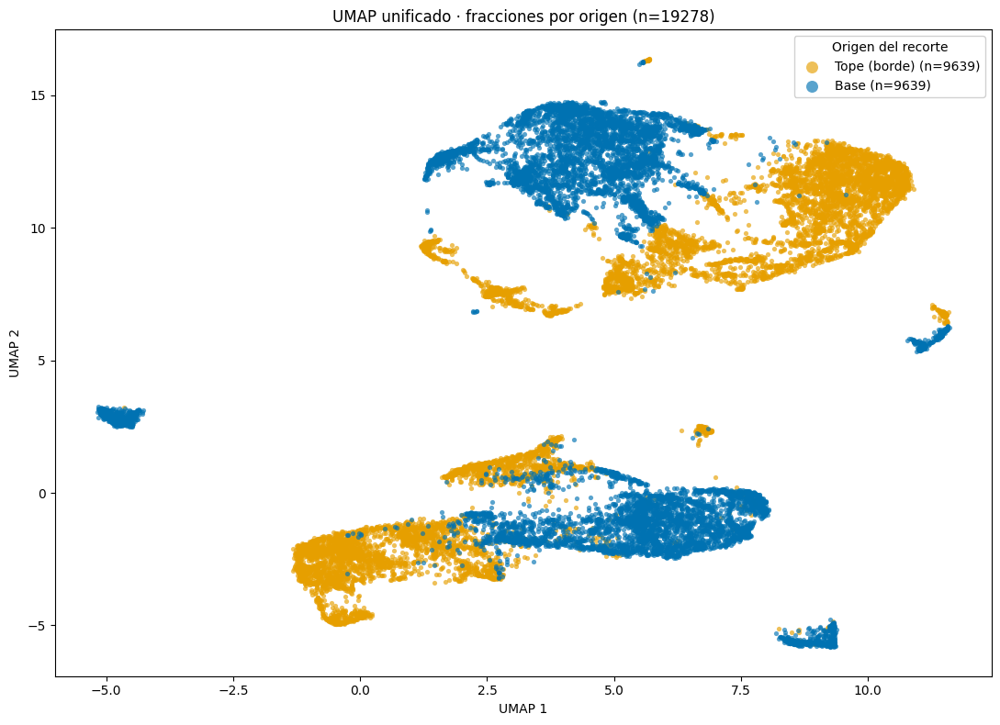
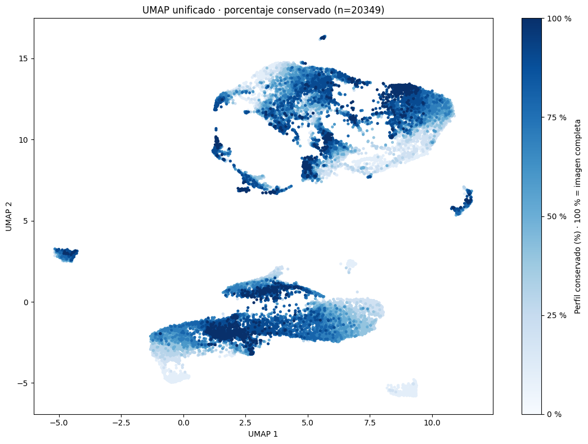

metadata: data\12.unificado_divididos_en_train_val_y_test\metadata.csv
conjuntos: train, val, test
modelo: model_resnet18_unificado_bs16_lr1e-3_weighted_unfreeze.pth
dispositivo: cpu
batch_size: 16
tamano_imagen: 224
n_neighbors: 50
min_dist: 0.1
metric: cosine
random_state: 42UMAP unificado de train, val y test
Se visualizan las imágenes de los conjuntos train, val y test persistidos en metadata.csv de data/12.unificado_divididos_en_train_val_y_test. Se conserva la columna split, sin crear otra partición.
Se usan los pesos locales de ResNet18, el preprocesamiento y los parámetros configurados de UMAP. Cada imagen se representa mediante las 512 características de avgpool. UMAP se ajusta sobre los tres conjuntos juntos y sin etiquetas.
La misma proyección se muestra por clase, por origen del recorte (tope/base) y por porcentaje de perfil conservado.
Configuración
Preparación de los datos
Se seleccionan los conjuntos indicados en CONJUNTOS antes de validar identificadores o cargar imágenes. Se conservan todas las columnas y el orden de las filas, incluidas ruta_relativa, clase_carpeta y split.
Los identificadores o rutas duplicados, los campos requeridos faltantes y las imágenes inexistentes detienen el proceso.
El preprocesamiento es de 224 × 224 y normalización ImageNet, sin aumentación.
| imagenes | |
|---|---|
| split | |
| test | 3059 |
| train | 14231 |
| val | 3059 |
| imagenes_seleccionadas | |
|---|---|
| clase_carpeta | |
| clase01 | 494 |
| clase02 | 874 |
| clase03 | 1349 |
| clase05 | 1064 |
| clase06 | 969 |
| clase07 | 912 |
| clase08 | 5320 |
| clase09 | 380 |
| clase10 | 6745 |
| clase11 | 2242 |
| Identificador | Tiene asa | Tendencia Formal | Borde | Cuello | Cuerpo | Base | Clase Ana | Diametro Borde | Diametro Base | Altura Total | Cronologia | Ubicacion | id_perfil_completo | borde_origen | porcentaje_avance | archivo | ruta_relativa | clase_carpeta | split | |
|---|---|---|---|---|---|---|---|---|---|---|---|---|---|---|---|---|---|---|---|---|
| 0 | al_03a | No | II | 1 | B | 2 | 2 | 11.0 | 182 | 54 | 53 | ibero | Almedinilla | al_03a | completo | 100.0 | al_03a.png | clase11/al_03a.png | clase11 | val |
| 1 | al_03b | No | II | 1 | B | 2 | 2 | 11.0 | 178 | 57 | 46 | ibero | Almedinilla | al_03b | completo | 100.0 | al_03b.png | clase11/al_03b.png | clase11 | test |
| 2 | al_03c | No | II | 1 | B | 2 | 2 | 11.0 | 185 | 56 | 49 | ibero | Almedinilla | al_03c | completo | 100.0 | al_03c.png | clase11/al_03c.png | clase11 | val |
| 3 | al_03d | No | II | 1 | B | 2 | 2 | 11.0 | 160 | 41 | 45 | ibero | Almedinilla | al_03d | completo | 100.0 | al_03d.png | clase11/al_03d.png | clase11 | train |
| 4 | al_03e | No | II | 1 | B | 2 | 2 | 11.0 | 164 | 54 | 44 | ibero | Almedinilla | al_03e | completo | 100.0 | al_03e.png | clase11/al_03e.png | clase11 | val |
Total de imágenes seleccionadas referenciadas y encontradas: 20349
Valores faltantes en Clase Ana: 0Imágenes: 20349 · Lotes: 1272Extracción de características
Se reconstruye ResNet18 a partir de sus pesos locales, sin descargar pesos. La cantidad de salidas del clasificador se lee del archivo del modelo. Se extraen las características anteriores al clasificador, en modo evaluación y sin gradientes.
Se verifica un vector por imagen seleccionada, incluido el último lote incompleto. Los vectores quedan en memoria para repetir UMAP con otros parámetros.
Características: 1600/20349
Características: 3200/20349
Características: 4800/20349
Características: 6400/20349
Características: 8000/20349
Características: 9600/20349
Características: 11200/20349
Características: 12800/20349
Características: 14400/20349
Características: 16000/20349
Características: 17600/20349
Características: 19200/20349
Características: 20349/20349
Matriz de características verificada: (20349, 512)1. Proyección y visualización por clase
Se ajusta UMAP conjuntamente sobre los vectores de train, val y test, con distancia coseno, semilla fija y un solo trabajo. Las clases y demás columnas de metadata no intervienen en el ajuste; las clases solo se usan para colorear los puntos. Se comprueba que las filas pertenezcan a los conjuntos permitidos.

completo: 1071 imágenes seleccionadas
tope: 9639 imágenes seleccionadas
base: 9639 imágenes seleccionadas
Fracciones: 19278 · Total: 203492. Fracciones por origen: tope y base
Se representan los recortes de los conjuntos seleccionados: tope (borde) en naranja y base en azul. Las imágenes completas se excluyen únicamente de esta vista. Se conservan las coordenadas y límites del gráfico por clase, sin volver a ajustar UMAP. La leyenda interna indica el número de fracciones por grupo.

3. Porcentaje conservado: escala de azules
Incluye todas las imágenes seleccionadas, con las mismas coordenadas y límites. La escala va de 0 a 100 %: cuanto más perfil conserva la imagen, más oscuro es el azul; las completas tienen el tono más oscuro. Se dibujan primero los porcentajes menores para que las completas queden visibles donde se superponen puntos.
El porcentaje representa la proporción de perfil conservada, no el área o la cantidad de píxeles. Un mismo porcentaje desde el tope y desde la base recibe el mismo tono.

Exportación
El CSV conserva todas las filas seleccionadas de train, val y test, sus columnas originales y su orden; agrega las coordenadas UMAP_1 y UMAP_2. Se guardan las tres figuras mostradas en PNG a 200 dpi en output/umap/, con el prefijo umap_unificado_.
| Identificador | ruta_relativa | clase_carpeta | split | UMAP_1 | UMAP_2 | |
|---|---|---|---|---|---|---|
| 0 | al_03a | clase11/al_03a.png | clase11 | val | 2.592333 | 0.502706 |
| 1 | al_03b | clase11/al_03b.png | clase11 | test | 3.122479 | 0.693743 |
| 2 | al_03c | clase11/al_03c.png | clase11 | val | 3.750761 | 0.736076 |
| 3 | al_03d | clase11/al_03d.png | clase11 | train | 1.113274 | -1.376954 |
| 4 | al_03e | clase11/al_03e.png | clase11 | val | 2.588442 | 0.501039 |
| 5 | al_03f | clase11/al_03f.png | clase11 | test | 3.984710 | 0.943397 |
| 6 | al_03g | clase11/al_03g.png | clase11 | train | 3.406426 | 0.719227 |
| 7 | al_03h | clase11/al_03h.png | clase11 | val | 3.611990 | 0.812362 |
| 8 | al_03i | clase11/al_03i.png | clase11 | train | 2.771839 | 0.379074 |
| 9 | al_03j | clase11/al_03j.png | clase11 | val | 2.926931 | 0.519567 |
Archivo generado: output\umap\umap_unificado_model_resnet18_unificado_bs16_lr1e-3_weighted_unfreeze.csv
Archivo generado: output\umap\umap_unificado_model_resnet18_unificado_bs16_lr1e-3_weighted_unfreeze.png
Archivo generado: output\umap\umap_unificado_origen_fracciones_model_resnet18_unificado_bs16_lr1e-3_weighted_unfreeze.png
Archivo generado: output\umap\umap_unificado_porcentaje_model_resnet18_unificado_bs16_lr1e-3_weighted_unfreeze.png